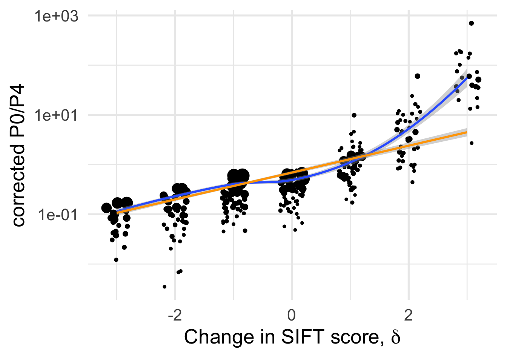
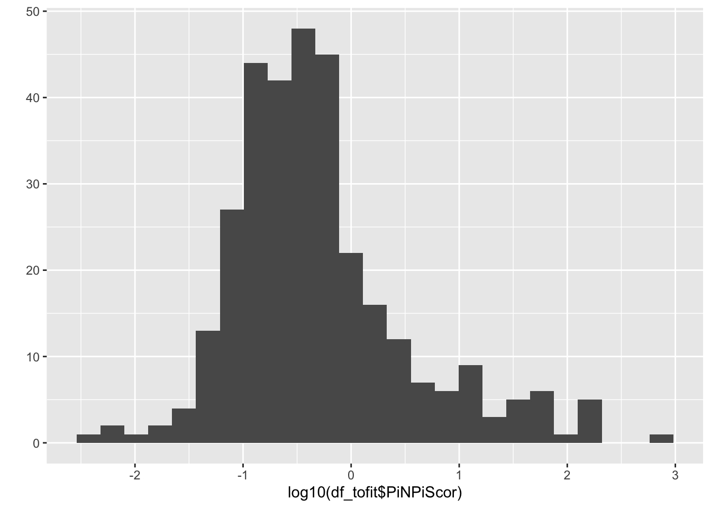
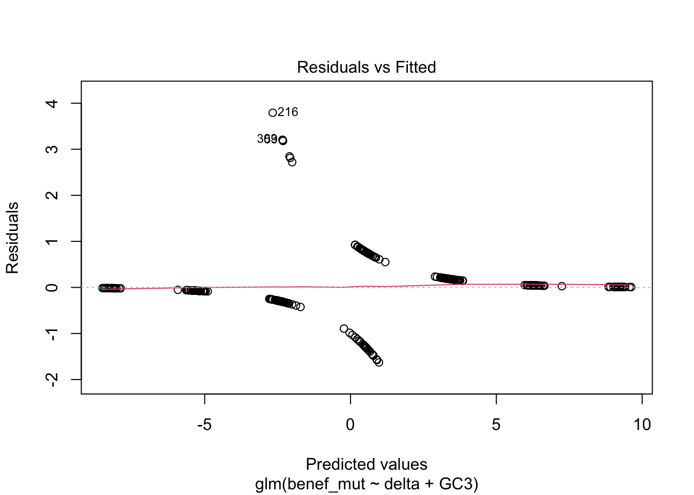
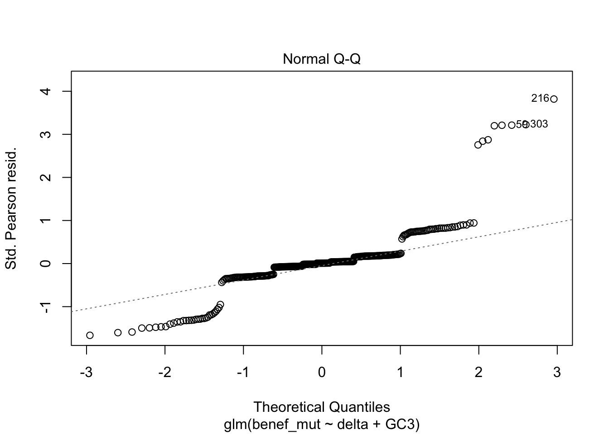

Supplementary text for GBE ms XX-YY:
Mixed models for exploring variation of mutation properties across SIFT classes
J Chen, T. Bataillon, S Glemin, M. Lascoux
Last update: 2021-03-13
Last updated: 2021-03-13
Checks: 7 0
Knit directory: delta-sift-polydfe/
This reproducible R Markdown analysis was created with workflowr (version 1.6.2). The Checks tab describes the reproducibility checks that were applied when the results were created. The Past versions tab lists the development history.
Great! Since the R Markdown file has been committed to the Git repository, you know the exact version of the code that produced these results.
Great job! The global environment was empty. Objects defined in the global environment can affect the analysis in your R Markdown file in unknown ways. For reproduciblity it’s best to always run the code in an empty environment.
The command set.seed(20210313) was run prior to running the code in the R Markdown file. Setting a seed ensures that any results that rely on randomness, e.g. subsampling or permutations, are reproducible.
Great job! Recording the operating system, R version, and package versions is critical for reproducibility.
Nice! There were no cached chunks for this analysis, so you can be confident that you successfully produced the results during this run.
Great job! Using relative paths to the files within your workflowr project makes it easier to run your code on other machines.
Great! You are using Git for version control. Tracking code development and connecting the code version to the results is critical for reproducibility.
The results in this page were generated with repository version aa61ff7. See the Past versions tab to see a history of the changes made to the R Markdown and HTML files.
Note that you need to be careful to ensure that all relevant files for the analysis have been committed to Git prior to generating the results (you can use wflow_publish or wflow_git_commit). workflowr only checks the R Markdown file, but you know if there are other scripts or data files that it depends on. Below is the status of the Git repository when the results were generated:
Ignored files:
Ignored: .DS_Store
Untracked files:
Untracked: data/summary_polyDFE_siftCate_new.txt
Untracked: eps_vs_delta.pdf
Untracked: eps_vs_lognsyn_counts.pdf
Untracked: flux_benef_vsdelta.pdf
Untracked: overview_dfe_bins_ByDelta.pdf
Untracked: pb_versus_delta.pdf
Untracked: pin_pis_corrected_vs_delta.png
Unstaged changes:
Deleted: analysis/S1_Stat_models_deltaDIFT_DFEs.Rmd
Note that any generated files, e.g. HTML, png, CSS, etc., are not included in this status report because it is ok for generated content to have uncommitted changes.
These are the previous versions of the repository in which changes were made to the R Markdown (analysis/S1_Stat_models_deltaSIFT_DFEs.Rmd) and HTML (docs/S1_Stat_models_deltaSIFT_DFEs.html) files. If you’ve configured a remote Git repository (see ?wflow_git_remote), click on the hyperlinks in the table below to view the files as they were in that past version.
| File | Version | Author | Date | Message |
|---|---|---|---|---|
| html | 343029d | Thomas Bataillon | 2021-03-13 | Build site. |
| html | 706a03c | Thomas Bataillon | 2021-03-13 | Build site. |
| Rmd | 66965e5 | Thomas Bataillon | 2021-03-13 | Publish the initial files for myproject |
brief overview of analysis and updates :
We read in the data made available in the lastest version of the poyDFE outputs summary by Jun Chen.
We define a covariate \(\delta\) as the change in discretized SIFT scores
Rationale for conditioning DFE on \(\delta\) is to illustrate that change in SIFT scores are a powerful way to capture the expected effect of mutations and the fact that DFEs are quite different. There is a sharp divide between \(\delta \leq 0\) and \(\delta >0\)
we explore the amount of variation explained by \(\delta\) for
- pin/piS
- other DFE property: probability of sizable amount of beneficial mutations ( eg \(Prob[ p_b >0.1 ]\))
Reading the data
dfe_sift <- read.table("Data/summary_polyDFE_siftCate_new.txt",header=T)
dim(dfe_sift)[1] 507 26names(dfe_sift) [1] "species" "group" "category" "cat04" "from"
[6] "to" "mutation" "gradient" "eps" "Sd"
[11] "beta" "pb" "Sb" "alpha" "PiS"
[16] "PiN" "PiNPiS" "syn_counts" "nsyn_counts" "Lsyn"
[21] "Lnsyn" "D1" "D2" "D3" "D4"
[26] "D5" dfe_sift$delta <- dfe_sift$to - dfe_sift$from
head( dfe_sift) %>% kable(digits = 2)| species | group | category | cat04 | from | to | mutation | gradient | eps | Sd | beta | pb | Sb | alpha | PiS | PiN | PiNPiS | syn_counts | nsyn_counts | Lsyn | Lnsyn | D1 | D2 | D3 | D4 | D5 | delta |
|---|---|---|---|---|---|---|---|---|---|---|---|---|---|---|---|---|---|---|---|---|---|---|---|---|---|---|
| Ayon | tree | 0:DEL-DEL | 0 | -2 | -2 | sdelet | 0.00 | 0.32 | -2282.42 | 1.91 | 0.43 | 16.08 | 1.00 | 0 | 0.00 | 0.75 | 14155 | 129 | 3659915 | 46187 | 0.00 | 0.00 | 0.00 | 0.05 | 0.52 | 0 |
| Ayon | tree | 0:DEL-EXDEL | 0 | -2 | -3 | delet | 0.00 | 0.00 | -7.12 | 2.33 | 0.00 | 0.23 | 0.00 | 0 | 0.00 | 0.29 | 14155 | 86 | 3659915 | 74160 | 0.00 | 0.31 | 0.69 | 0.00 | 0.00 | -1 |
| Ayon | tree | 0:DEL-STABLE | 0 | -2 | 0 | benefit | 0.21 | 0.24 | -0.65 | 0.01 | 0.50 | 95.49 | 0.99 | 0 | 0.01 | 10.12 | 14155 | 706 | 3659915 | 20133 | 0.50 | 0.00 | 0.00 | 0.00 | 0.00 | 2 |
| Ayon | tree | 0:DEL-TOL | 0 | -2 | -1 | benefit | 0.00 | 0.21 | -8.37 | 0.01 | 0.50 | 97.07 | 0.99 | 0 | 0.00 | 2.46 | 14155 | 210 | 3659915 | 23847 | 0.49 | 0.01 | 0.00 | 0.00 | 0.00 | 1 |
| Ayon | tree | 0:EXDEL-DEL | 0 | -3 | -2 | benefit | 0.01 | 0.02 | -26.45 | 0.01 | 0.50 | 90.72 | 0.99 | 0 | 0.01 | 6.03 | 14155 | 14 | 3659915 | 669 | 0.49 | 0.01 | 0.00 | 0.00 | 0.00 | 1 |
| Ayon | tree | 0:EXDEL-EXDEL | 0 | -3 | -3 | sdelet | 0.00 | 0.30 | -308.69 | 0.03 | 0.02 | 2.85 | 0.07 | 0 | 0.00 | 0.98 | 14155 | 6 | 3659915 | 1970 | 0.85 | 0.06 | 0.05 | 0.02 | 0.00 | 0 |
Filtering data :
Removing obs with too high \(\epsilon_{anc}\)
I n what follows I use the subset obtained with the condition filter(cat04==0) to generate df_tofit used throughout for fitting . NB Filtering on eps means 15% data obs removed but I think it is needed in order to avoid weird outliers
dim(dfe_sift)[1] 507 27species_low_nchr <- c("Qmango", "Shua", "Bnana")
dfe_sift <- dfe_sift %>%
filter(!(species %in% species_low_nchr)) %>%
filter(eps <0.1) #
dim(dfe_sift)[1] 387 27dim(dfe_sift)[1] 387 27(507-387)/507 #data loss[1] 0.2366864dfe_sift %>% filter(cat04==0) -> df_tofit
dim(df_tofit)[1] 336 27length(unique(df_tofit$species))[1] 23Dependent variable : \(\frac{P_0}{P_4}\)
We use the corrected \(\frac{P_0}{P_4}\) analogous to \(\frac{\pi_N}{\pi_S}\)
We correct by adding +1 to every count: \(\pi_N =\frac{n_N + 1}{L_N + 1}\) and \(\pi_S =\frac{n_S + 1}{L_S + 1}\) we can then directly use a log scale
df_tofit$PiNPiScor <- (df_tofit$nsyn_counts+1)*(df_tofit$Lsyn+1)/((df_tofit$Lnsyn+1)*(df_tofit$syn_counts+1))
df_tofit %>%
filter(cat04==0) %>%
ggplot(aes(x=delta, y=PiNPiScor, weight=(1+nsyn_counts)) )+
# geom_point(aes(size = nsyn_counts)) +
geom_jitter(width = 0.2, aes(size = nsyn_counts)) +
scale_y_log10() +
# facet_wrap(~ group) +
geom_smooth(method = "loess", formula ="y~ x", se =T, aes(color=NULL))+
geom_smooth(method = "lm", formula ="y~ x", se =T, aes(color=NULL), color="orange")+
theme_minimal(base_size = 20)+
xlab(expression(paste("Change in SIFT score, " , delta)))+
ylab("corrected P0/P4")+
scale_color_colorblind()+
theme(legend.position = "none")+
NULL
| Version | Author | Date |
|---|---|---|
| 706a03c | Thomas Bataillon | 2021-03-13 |
# ggsave("manuscript_GBE/manuscript_GBE_Jun2/figures_update_Feb2020/corrected_p0p4_delta.pdf", device = "pdf")A (linear) fit for each species separately
df_tofit %>%
filter(cat04==0) %>%
ggplot(aes(x=delta, y=PiNPiScor, color=species, weight=sqrt((1+nsyn_counts))) )+
# geom_point(aes(size = nsyn_counts)) +
geom_jitter(width = 0.2, aes(size = nsyn_counts)) +
scale_y_log10() +
# facet_wrap(~ group) +
geom_smooth(method = "lm", formula ="y~ x", se =F)+
theme_minimal(base_size = 20)+
xlab(expression(paste("Change in SIFT score, " , delta)))+
ylab("corrected P0/P4")+
scale_color_viridis_d(direction = -1)+
theme(legend.position = "none")+
NULL
| Version | Author | Date |
|---|---|---|
| 706a03c | Thomas Bataillon | 2021-03-13 |
# ggsave("manuscript_GBE/manuscript_GBE_Jun2/figures_update_Feb2020/corrected_p0p4_delta_manyslopes.pdf",device = "pdf")Linear (mixed) models
dim(df_tofit)[1] 336 28df_tofit$weights <- sqrt(df_tofit$nsyn_counts)
qplot(log10(df_tofit$PiNPiScor), bins = 25)
| Version | Author | Date |
|---|---|---|
| 706a03c | Thomas Bataillon | 2021-03-13 |
# ggplot(df_tofit,
# aes(x=delta, y = log10(PiNPiScor),
# size = )) +
# geom_jitter(width = 0.1)+
# geom_smooth(method="lm", se =T)+ NULL
#
naive0 <- lm(log(PiNPiScor) ~ 1 ,
data = df_tofit)
naive <- lm(log(PiNPiScor) ~ delta ,
data = df_tofit)
summary(naive)
Call:
lm(formula = log(PiNPiScor) ~ delta, data = df_tofit)
Residuals:
Min 1Q Median 3Q Max
-5.0530 -0.6227 -0.0312 0.5849 3.8786
Coefficients:
Estimate Std. Error t value Pr(>|t|)
(Intercept) -0.08764 0.05902 -1.485 0.139
delta 1.05637 0.03635 29.065 <2e-16 ***
---
Signif. codes: 0 '***' 0.001 '**' 0.01 '*' 0.05 '.' 0.1 ' ' 1
Residual standard error: 1.081 on 334 degrees of freedom
Multiple R-squared: 0.7167, Adjusted R-squared: 0.7158
F-statistic: 844.8 on 1 and 334 DF, p-value: < 2.2e-16# plot(naive)
AIC(naive)[1] 1010.021mixed_1 <-lmer(formula = log(PiNPiScor) ~ delta +(1|species) ,
data = df_tofit, REML =F )
merTools::modelInfo(mixed_1) n.obs n.lvls AIC sigma
1 336 1 1011.67 1.070842lmerTest::ranova(mixed_1) ANOVA-like table for random-effects: Single term deletions
Model:
log(PiNPiScor) ~ delta + (1 | species)
npar logLik AIC LRT Df Pr(>Chisq)
<none> 4 -501.84 1011.7
(1 | species) 3 -502.01 1010.0 0.35022 1 0.554mixed_2 <-lmer(formula = log(PiNPiScor) ~ delta +(0 + delta |species),
data = df_tofit, REML =F )
AIC(mixed_2)[1] 971.8783merTools::modelInfo(mixed_2) n.obs n.lvls AIC sigma
1 336 1 971.8783 0.963824plotREsim(REsim(mixed_1)) # estimated random effects (intercepts) for each sp
| Version | Author | Date |
|---|---|---|
| 706a03c | Thomas Bataillon | 2021-03-13 |
summary(mixed_2)Linear mixed model fit by maximum likelihood . t-tests use Satterthwaite's
method [lmerModLmerTest]
Formula: log(PiNPiScor) ~ delta + (0 + delta | species)
Data: df_tofit
AIC BIC logLik deviance df.resid
971.9 987.1 -481.9 963.9 332
Scaled residuals:
Min 1Q Median 3Q Max
-3.6383 -0.5812 -0.0412 0.5825 2.9437
Random effects:
Groups Name Variance Std.Dev.
species delta 0.08705 0.2950
Residual 0.92896 0.9638
Number of obs: 336, groups: species, 23
Fixed effects:
Estimate Std. Error df t value Pr(>|t|)
(Intercept) -0.08130 0.05268 313.74534 -1.543 0.124
delta 1.06093 0.06956 23.23021 15.252 1.35e-13 ***
---
Signif. codes: 0 '***' 0.001 '**' 0.01 '*' 0.05 '.' 0.1 ' ' 1
Correlation of Fixed Effects:
(Intr)
delta 0.017 plotREsim(REsim(mixed_2)) # estimated random effects (slopes) for each sp relative to the common slope
| Version | Author | Date |
|---|---|---|
| 706a03c | Thomas Bataillon | 2021-03-13 |
Summary of fits
vec_aic = c(AIC(naive0), AIC(naive), AIC(mixed_1), AIC(mixed_2))
models_names = c("lm no slope", "lm slope", "random intercept", "random slope")
df_table <- tibble(models_names, vec_aic)
knitr::kable(df_table, digits = 2, col.names = c("Models for P0/P4 ratio", "AIC"))| Models for P0/P4 ratio | AIC |
|---|---|
| lm no slope | 1431.74 |
| lm slope | 1010.02 |
| random intercept | 1011.67 |
| random slope | 971.88 |
1 - (deviance(mixed_2) /(1011.67-1))[1] 0.04629771Tech check: influence of eps
naive0 <- lm(log(PiNPiScor) ~ eps ,
data = df_tofit)
summary(naive0)
Call:
lm(formula = log(PiNPiScor) ~ eps, data = df_tofit)
Residuals:
Min 1Q Median 3Q Max
-7.0381 -1.2568 -0.4835 0.8376 7.0708
Coefficients:
Estimate Std. Error t value Pr(>|t|)
(Intercept) -0.2153 0.1270 -1.695 0.091 .
eps 6.0722 5.3377 1.138 0.256
---
Signif. codes: 0 '***' 0.001 '**' 0.01 '*' 0.05 '.' 0.1 ' ' 1
Residual standard error: 2.027 on 334 degrees of freedom
Multiple R-squared: 0.00386, Adjusted R-squared: 0.0008773
F-statistic: 1.294 on 1 and 334 DF, p-value: 0.2561naive <- lm(log(PiNPiScor) ~ eps + delta ,
data = df_tofit)
summary(naive)
Call:
lm(formula = log(PiNPiScor) ~ eps + delta, data = df_tofit)
Residuals:
Min 1Q Median 3Q Max
-5.1126 -0.5786 -0.0008 0.5477 3.7524
Coefficients:
Estimate Std. Error t value Pr(>|t|)
(Intercept) 0.005279 0.067501 0.078 0.93771
eps -7.866433 2.858775 -2.752 0.00625 **
delta 1.073022 0.036498 29.399 < 2e-16 ***
---
Signif. codes: 0 '***' 0.001 '**' 0.01 '*' 0.05 '.' 0.1 ' ' 1
Residual standard error: 1.071 on 333 degrees of freedom
Multiple R-squared: 0.7229, Adjusted R-squared: 0.7213
F-statistic: 434.5 on 2 and 333 DF, p-value: < 2.2e-16anova(naive, test = "F")Analysis of Variance Table
Response: log(PiNPiScor)
Df Sum Sq Mean Sq F value Pr(>F)
eps 1 5.32 5.32 4.6393 0.03197 *
delta 1 990.98 990.98 864.3094 < 2e-16 ***
Residuals 333 381.80 1.15
---
Signif. codes: 0 '***' 0.001 '**' 0.01 '*' 0.05 '.' 0.1 ' ' 1car::vif(naive)Registered S3 methods overwritten by 'car':
method from
influence.merMod lme4
cooks.distance.influence.merMod lme4
dfbeta.influence.merMod lme4
dfbetas.influence.merMod lme4 eps delta
1.028283 1.028283 # plot(naive)
AIC(naive)[1] 1004.466mixed_1 <-lmer(formula = log(PiNPiScor) ~ eps + delta +(1|species) ,
data = df_tofit, REML =F )
merTools::modelInfo(mixed_1) n.obs n.lvls AIC sigma
1 336 1 1005.487 1.053509lmerTest::ranova(mixed_1) ANOVA-like table for random-effects: Single term deletions
Model:
log(PiNPiScor) ~ eps + delta + (1 | species)
npar logLik AIC LRT Df Pr(>Chisq)
<none> 5 -497.74 1005.5
(1 | species) 4 -498.23 1004.5 0.97877 1 0.3225mixed_2 <-lmer(formula = log(PiNPiScor) ~ eps + delta +(0 + delta |species),
data = df_tofit, REML =F )
AIC(mixed_2)[1] 964.0875merTools::modelInfo(mixed_2) n.obs n.lvls AIC sigma
1 336 1 964.0875 0.9486668plotREsim(REsim(mixed_1)) # estimated random effects (intercepts) for each sp
| Version | Author | Date |
|---|---|---|
| 706a03c | Thomas Bataillon | 2021-03-13 |
summary(mixed_2)Linear mixed model fit by maximum likelihood . t-tests use Satterthwaite's
method [lmerModLmerTest]
Formula: log(PiNPiScor) ~ eps + delta + (0 + delta | species)
Data: df_tofit
AIC BIC logLik deviance df.resid
964.1 983.2 -477.0 954.1 331
Scaled residuals:
Min 1Q Median 3Q Max
-3.7382 -0.5563 -0.0578 0.5964 3.2749
Random effects:
Groups Name Variance Std.Dev.
species delta 0.08844 0.2974
Residual 0.89997 0.9487
Number of obs: 336, groups: species, 23
Fixed effects:
Estimate Std. Error df t value Pr(>|t|)
(Intercept) 0.01738 0.06055 317.42835 0.287 0.77422
eps -8.29817 2.63066 324.65735 -3.154 0.00176 **
delta 1.07896 0.06999 23.48516 15.415 8.86e-14 ***
---
Signif. codes: 0 '***' 0.001 '**' 0.01 '*' 0.05 '.' 0.1 ' ' 1
Correlation of Fixed Effects:
(Intr) eps
eps -0.516
delta 0.056 -0.081plotREsim(REsim(mixed_2)) # estimated random effects (slopes) for each sp relative to the common slope
| Version | Author | Date |
|---|---|---|
| 706a03c | Thomas Bataillon | 2021-03-13 |
vec_aic = c(AIC(naive0), AIC(naive), AIC(mixed_1), AIC(mixed_2))
models_names = c("lm no slope", "lm slope", "random intercept", "random slope")
df_table <- tibble(models_names, vec_aic)
knitr::kable(df_table, digits = 2, col.names = c("Models for P0/P4 ratio", "AIC"))| Models for P0/P4 ratio | AIC |
|---|---|
| lm no slope | 1432.44 |
| lm slope | 1004.47 |
| random intercept | 1005.49 |
| random slope | 964.09 |
Dependent variable : \(p_b\)
Here if we want to analyse variation in \(p_b\), we probably need to discretize the data and go a logistic regression on the two categories
Overview
qplot(df_tofit$pb, bins = 30, fill = (df_tofit$pb>0.1)) +
theme_minimal(base_size = 15) 
| Version | Author | Date |
|---|---|---|
| 706a03c | Thomas Bataillon | 2021-03-13 |
df_tofit <- mutate(df_tofit, benef_mut = ifelse(pb<0.1, 0, 1))
table(df_tofit$benef_mut) %>% kable(col.names = c("benef_mut", "n"))| benef_mut | n |
|---|---|
| 0 | 194 |
| 1 | 142 |
df_tofit %>%
ggplot(aes(x=delta, y=benef_mut, color=species, weight=sqrt((1+nsyn_counts))) )+
# geom_point(aes(size = nsyn_counts)) +
geom_jitter( width = 0.15, height = 0.05, aes(size = nsyn_counts)) +
geom_smooth(method = "glm",
method.args=list(family="binomial"), se=T, aes(color="black"), size = 2) +
theme_minimal(base_size = 20)+
xlab(expression(paste("Change in SIFT score, " , delta)))+
ylab(expression(paste("Probability of " , p[b], " > 0.1")))+
scale_color_viridis_d()+
theme(legend.position = "none")+
NULL`geom_smooth()` using formula 'y ~ x'Warning in eval(family$initialize): non-integer #successes in a binomial glm!
| Version | Author | Date |
|---|---|---|
| 706a03c | Thomas Bataillon | 2021-03-13 |
A loess fit for each species separately
Linear (mixed) models
# df_tofit<- df_tofit[-c(247),] # 1 mega outlier
dim(df_tofit)[1] 336 30df_tofit$weights <- sqrt(df_tofit$nsyn_counts)
naive0 <- glm(benef_mut ~ 1 , family = "binomial",
data = df_tofit)
summary(naive0)
Call:
glm(formula = benef_mut ~ 1, family = "binomial", data = df_tofit)
Deviance Residuals:
Min 1Q Median 3Q Max
-1.048 -1.048 -1.048 1.312 1.312
Coefficients:
Estimate Std. Error z value Pr(>|z|)
(Intercept) -0.3120 0.1104 -2.825 0.00472 **
---
Signif. codes: 0 '***' 0.001 '**' 0.01 '*' 0.05 '.' 0.1 ' ' 1
(Dispersion parameter for binomial family taken to be 1)
Null deviance: 457.71 on 335 degrees of freedom
Residual deviance: 457.71 on 335 degrees of freedom
AIC: 459.71
Number of Fisher Scoring iterations: 4naive0$deviance[1] 457.7148naive <- glm(benef_mut ~ delta , family = "binomial",
data = df_tofit)
summary(naive)
Call:
glm(formula = benef_mut ~ delta, family = "binomial", data = df_tofit)
Deviance Residuals:
Min 1Q Median 3Q Max
-2.6586 -0.5524 -0.2926 0.8434 2.9893
Coefficients:
Estimate Std. Error z value Pr(>|z|)
(Intercept) -0.4760 0.1519 -3.133 0.00173 **
delta 1.3268 0.1418 9.355 < 2e-16 ***
---
Signif. codes: 0 '***' 0.001 '**' 0.01 '*' 0.05 '.' 0.1 ' ' 1
(Dispersion parameter for binomial family taken to be 1)
Null deviance: 457.71 on 335 degrees of freedom
Residual deviance: 280.73 on 334 degrees of freedom
AIC: 284.73
Number of Fisher Scoring iterations: 5anova(naive0, naive, test="Chisq")Analysis of Deviance Table
Model 1: benef_mut ~ 1
Model 2: benef_mut ~ delta
Resid. Df Resid. Dev Df Deviance Pr(>Chi)
1 335 457.71
2 334 280.73 1 176.99 < 2.2e-16 ***
---
Signif. codes: 0 '***' 0.001 '**' 0.01 '*' 0.05 '.' 0.1 ' ' 1plot(naive)
| Version | Author | Date |
|---|---|---|
| 706a03c | Thomas Bataillon | 2021-03-13 |

| Version | Author | Date |
|---|---|---|
| 706a03c | Thomas Bataillon | 2021-03-13 |

| Version | Author | Date |
|---|---|---|
| 706a03c | Thomas Bataillon | 2021-03-13 |

| Version | Author | Date |
|---|---|---|
| 706a03c | Thomas Bataillon | 2021-03-13 |
1 - (naive$deviance/naive0$deviance) # pseudo R^2 [1] 0.3866719AIC(naive)[1] 284.7294mixed_1 <-glmer(benef_mut ~ delta +(1|species) , family = "binomial",
data = df_tofit )
AIC(mixed_1)[1] 281.085summary(mixed_1)Generalized linear mixed model fit by maximum likelihood (Laplace
Approximation) [glmerMod]
Family: binomial ( logit )
Formula: benef_mut ~ delta + (1 | species)
Data: df_tofit
AIC BIC logLik deviance df.resid
281.1 292.5 -137.5 275.1 333
Scaled residuals:
Min 1Q Median 3Q Max
-5.2346 -0.3862 -0.1435 0.3912 6.8791
Random effects:
Groups Name Variance Std.Dev.
species (Intercept) 0.4739 0.6884
Number of obs: 336, groups: species, 23
Fixed effects:
Estimate Std. Error z value Pr(>|z|)
(Intercept) -0.5253 0.2166 -2.425 0.0153 *
delta 1.4335 0.1589 9.022 <2e-16 ***
---
Signif. codes: 0 '***' 0.001 '**' 0.01 '*' 0.05 '.' 0.1 ' ' 1
Correlation of Fixed Effects:
(Intr)
delta -0.175merTools::modelInfo(mixed_1) n.obs n.lvls AIC sigma
1 336 1 281.085 1mixed_2 <-glmer(formula = benef_mut ~ delta +(0 + delta |species), family = "binomial",
data = df_tofit)
AIC(mixed_2)[1] 262.415summary(mixed_2)Generalized linear mixed model fit by maximum likelihood (Laplace
Approximation) [glmerMod]
Family: binomial ( logit )
Formula: benef_mut ~ delta + (0 + delta | species)
Data: df_tofit
AIC BIC logLik deviance df.resid
262.4 273.9 -128.2 256.4 333
Scaled residuals:
Min 1Q Median 3Q Max
-3.6050 -0.3534 -0.0513 0.3376 3.5818
Random effects:
Groups Name Variance Std.Dev.
species delta 1.315 1.147
Number of obs: 336, groups: species, 23
Fixed effects:
Estimate Std. Error z value Pr(>|z|)
(Intercept) -0.5321 0.1656 -3.214 0.00131 **
delta 2.0944 0.4051 5.169 2.35e-07 ***
---
Signif. codes: 0 '***' 0.001 '**' 0.01 '*' 0.05 '.' 0.1 ' ' 1
Correlation of Fixed Effects:
(Intr)
delta -0.130merTools::modelInfo(mixed_2) n.obs n.lvls AIC sigma
1 336 1 262.415 1plotREsim(REsim(mixed_1)) # estimated random effects (intercepts) for each sp
| Version | Author | Date |
|---|---|---|
| 706a03c | Thomas Bataillon | 2021-03-13 |
plotREsim(REsim(mixed_2)) # estimated random effects (slopes) for each sp relative to the common slope
| Version | Author | Date |
|---|---|---|
| 706a03c | Thomas Bataillon | 2021-03-13 |
Summary of fits
vec_aic = c(AIC(naive0), AIC(naive), AIC(mixed_1), AIC(mixed_2))
models_names = c("glm no slope", "glm with slope", "glm with random intercept", "glm with random slope")
df_table <- tibble(models_names, vec_aic)
knitr::kable(df_table, digits = 2, col.names = c("Models for proportion beneficial ", "AIC"))| Models for proportion beneficial | AIC |
|---|---|
| glm no slope | 459.71 |
| glm with slope | 284.73 |
| glm with random intercept | 281.08 |
| glm with random slope | 262.41 |
Some pseudo R^2 to compare with the linear models on the piNpiS ratio Using the deviance of mixed_2 and comparing it to the most naive model (glm no slope) aka naive0 yields a pseudo R^2:
1 -(deviance(mixed_2)/naive0$deviance)[1] 0.516144tech check with eps included in the model
naive0 <- glm(benef_mut ~ eps , family = "binomial",
data = df_tofit)
summary(naive0)
Call:
glm(formula = benef_mut ~ eps, family = "binomial", data = df_tofit)
Deviance Residuals:
Min 1Q Median 3Q Max
-1.7952 -0.9635 -0.9568 1.3507 1.4153
Coefficients:
Estimate Std. Error z value Pr(>|z|)
(Intercept) -0.5438 0.1298 -4.191 2.78e-05 ***
eps 19.7114 5.7119 3.451 0.000559 ***
---
Signif. codes: 0 '***' 0.001 '**' 0.01 '*' 0.05 '.' 0.1 ' ' 1
(Dispersion parameter for binomial family taken to be 1)
Null deviance: 457.71 on 335 degrees of freedom
Residual deviance: 444.68 on 334 degrees of freedom
AIC: 448.68
Number of Fisher Scoring iterations: 4naive0$deviance[1] 444.6848naive <- glm(benef_mut ~ eps + delta , family = "binomial",
data = df_tofit)
summary(naive)
Call:
glm(formula = benef_mut ~ eps + delta, family = "binomial", data = df_tofit)
Deviance Residuals:
Min 1Q Median 3Q Max
-2.5701 -0.5137 -0.2721 0.6350 2.9211
Coefficients:
Estimate Std. Error z value Pr(>|z|)
(Intercept) -0.6695 0.1854 -3.611 0.000306 ***
eps 12.6527 6.7851 1.865 0.062214 .
delta 1.3042 0.1418 9.196 < 2e-16 ***
---
Signif. codes: 0 '***' 0.001 '**' 0.01 '*' 0.05 '.' 0.1 ' ' 1
(Dispersion parameter for binomial family taken to be 1)
Null deviance: 457.71 on 335 degrees of freedom
Residual deviance: 277.12 on 333 degrees of freedom
AIC: 283.12
Number of Fisher Scoring iterations: 5anova(naive0, naive, test="Chisq")Analysis of Deviance Table
Model 1: benef_mut ~ eps
Model 2: benef_mut ~ eps + delta
Resid. Df Resid. Dev Df Deviance Pr(>Chi)
1 334 444.68
2 333 277.12 1 167.56 < 2.2e-16 ***
---
Signif. codes: 0 '***' 0.001 '**' 0.01 '*' 0.05 '.' 0.1 ' ' 11 - (naive$deviance/naive0$deviance) # pseudo R^2 [1] 0.3768174AIC(naive)[1] 283.1198mixed_1 <-glmer(benef_mut ~ eps + delta +(1|species) , family = "binomial",
data = df_tofit )
AIC(mixed_1)[1] 278.2478summary(mixed_1)Generalized linear mixed model fit by maximum likelihood (Laplace
Approximation) [glmerMod]
Family: binomial ( logit )
Formula: benef_mut ~ eps + delta + (1 | species)
Data: df_tofit
AIC BIC logLik deviance df.resid
278.2 293.5 -135.1 270.2 332
Scaled residuals:
Min 1Q Median 3Q Max
-4.9130 -0.3566 -0.1126 0.4241 5.7448
Random effects:
Groups Name Variance Std.Dev.
species (Intercept) 0.5647 0.7515
Number of obs: 336, groups: species, 23
Fixed effects:
Estimate Std. Error z value Pr(>|z|)
(Intercept) -0.7972 0.2639 -3.021 0.00252 **
eps 16.6332 7.7992 2.133 0.03295 *
delta 1.4224 0.1604 8.868 < 2e-16 ***
---
Signif. codes: 0 '***' 0.001 '**' 0.01 '*' 0.05 '.' 0.1 ' ' 1
Correlation of Fixed Effects:
(Intr) eps
eps -0.493
delta -0.210 0.063merTools::modelInfo(mixed_1) n.obs n.lvls AIC sigma
1 336 1 278.2478 1mixed_2 <-glmer(formula = benef_mut ~ eps + delta +(0 + delta |species), family = "binomial",
data = df_tofit)
AIC(mixed_2)[1] 263.2358summary(mixed_2)Generalized linear mixed model fit by maximum likelihood (Laplace
Approximation) [glmerMod]
Family: binomial ( logit )
Formula: benef_mut ~ eps + delta + (0 + delta | species)
Data: df_tofit
AIC BIC logLik deviance df.resid
263.2 278.5 -127.6 255.2 332
Scaled residuals:
Min 1Q Median 3Q Max
-3.4725 -0.3508 -0.0542 0.3461 3.8218
Random effects:
Groups Name Variance Std.Dev.
species delta 1.219 1.104
Number of obs: 336, groups: species, 23
Fixed effects:
Estimate Std. Error z value Pr(>|z|)
(Intercept) -0.6571 0.2032 -3.234 0.00122 **
eps 8.1923 7.5323 1.088 0.27676
delta 2.0437 0.3969 5.149 2.62e-07 ***
---
Signif. codes: 0 '***' 0.001 '**' 0.01 '*' 0.05 '.' 0.1 ' ' 1
Correlation of Fixed Effects:
(Intr) eps
eps -0.573
delta -0.064 -0.089merTools::modelInfo(mixed_2) n.obs n.lvls AIC sigma
1 336 1 263.2358 1plotREsim(REsim(mixed_1)) # estimated random effects (intercepts) for each sp
| Version | Author | Date |
|---|---|---|
| 706a03c | Thomas Bataillon | 2021-03-13 |
plotREsim(REsim(mixed_2)) # estimated random effects (slopes) for each sp relative to the common slope
| Version | Author | Date |
|---|---|---|
| 706a03c | Thomas Bataillon | 2021-03-13 |
car::vif(naive) eps delta
1.001045 1.001045 df_tofit %>%
ggplot(aes(x=eps, y=benef_mut, color=species))+
# geom_point(aes(size = nsyn_counts)) +
geom_jitter( width = 0.0025, height = 0.05, aes(size = nsyn_counts)) +
geom_smooth(method = "glm",
method.args=list(family="binomial"), se=T, aes(color=NULL), color="black") +
theme_minimal(base_size = 15)+
xlab("eps")+
ylab("Probability of p_b >0.1 ")+
scale_color_viridis_d()+
theme(legend.position = "none")+
NULL`geom_smooth()` using formula 'y ~ x'
| Version | Author | Date |
|---|---|---|
| 706a03c | Thomas Bataillon | 2021-03-13 |
car::vif(naive) eps delta
1.001045 1.001045 df_tofit %>%
ggplot(aes(x=delta, y=benef_mut, color=species))+
# geom_point(aes(size = nsyn_counts)) +
geom_jitter( width = 0.0025, height = 0.05, aes(size = nsyn_counts)) +
geom_smooth(method = "glm",
method.args=list(family="binomial"), se=T, aes(color=NULL), color="black") +
theme_minimal(base_size = 15)+
xlab(expression(paste("Change in SIFT score, " , delta)))+
ylab("Probability of p_b >0.1 ")+
scale_color_viridis_d()+
theme(legend.position = "none")+
NULL`geom_smooth()` using formula 'y ~ x'
| Version | Author | Date |
|---|---|---|
| 706a03c | Thomas Bataillon | 2021-03-13 |
# updated pseudo R2
1 -(deviance(mixed_2)/naive0$deviance)[1] 0.5023703
sessionInfo()R version 4.0.2 (2020-06-22)
Platform: x86_64-apple-darwin17.0 (64-bit)
Running under: macOS Catalina 10.15.7
Matrix products: default
BLAS: /Library/Frameworks/R.framework/Versions/4.0/Resources/lib/libRblas.dylib
LAPACK: /Library/Frameworks/R.framework/Versions/4.0/Resources/lib/libRlapack.dylib
locale:
[1] en_US.UTF-8/en_US.UTF-8/en_US.UTF-8/C/en_US.UTF-8/en_US.UTF-8
attached base packages:
[1] stats graphics grDevices utils datasets methods base
other attached packages:
[1] lmerTest_3.1-3 merTools_0.5.2 arm_1.11-2 MASS_7.3-51.6
[5] lme4_1.1-23 Matrix_1.2-18 knitr_1.30 magrittr_1.5
[9] dplyr_1.0.2 ggthemes_4.2.0 ggplot2_3.3.2 workflowr_1.6.2
loaded via a namespace (and not attached):
[1] nlme_3.1-148 fs_1.5.0 RColorBrewer_1.1-2
[4] rprojroot_1.3-2 numDeriv_2016.8-1.1 tools_4.0.2
[7] TMB_1.7.18 backports_1.1.8 R6_2.4.1
[10] rpart_4.1-15 Hmisc_4.4-2 mgcv_1.8-31
[13] colorspace_1.4-1 nnet_7.3-14 withr_2.2.0
[16] tidyselect_1.1.0 gridExtra_2.3 curl_4.3
[19] compiler_4.0.2 git2r_0.27.1 htmlTable_2.1.0
[22] labeling_0.3 scales_1.1.1 checkmate_2.0.0
[25] mvtnorm_1.1-1 blme_1.0-5 stringr_1.4.0
[28] digest_0.6.25 foreign_0.8-80 minqa_1.2.4
[31] rmarkdown_2.3 rio_0.5.16 base64enc_0.1-3
[34] jpeg_0.1-8.1 pkgconfig_2.0.3 htmltools_0.5.0
[37] fastmap_1.0.1 highr_0.8 readxl_1.3.1
[40] htmlwidgets_1.5.2 rlang_0.4.7 rstudioapi_0.11
[43] shiny_1.5.0 generics_0.0.2 farver_2.0.3
[46] broom.mixed_0.2.6 zip_2.1.1 car_3.0-9
[49] Formula_1.2-4 Rcpp_1.0.5 munsell_0.5.0
[52] abind_1.4-5 lifecycle_0.2.0 stringi_1.4.6
[55] whisker_0.4 yaml_2.2.1 carData_3.0-4
[58] plyr_1.8.6 grid_4.0.2 promises_1.1.1
[61] forcats_0.5.0 crayon_1.3.4 lattice_0.20-41
[64] haven_2.3.1 splines_4.0.2 hms_0.5.3
[67] pillar_1.4.6 boot_1.3-25 reshape2_1.4.4
[70] codetools_0.2-16 glue_1.4.1 evaluate_0.14
[73] latticeExtra_0.6-29 data.table_1.13.0 png_0.1-7
[76] vctrs_0.3.2 nloptr_1.2.2.2 httpuv_1.5.4
[79] foreach_1.5.1 cellranger_1.1.0 gtable_0.3.0
[82] purrr_0.3.4 tidyr_1.1.1 openxlsx_4.2.2
[85] xfun_0.19 mime_0.9 xtable_1.8-4
[88] broom_0.7.0 coda_0.19-4 later_1.1.0.1
[91] survival_3.1-12 viridisLite_0.3.0 tibble_3.0.3
[94] iterators_1.0.13 cluster_2.1.0 statmod_1.4.34
[97] ellipsis_0.3.1